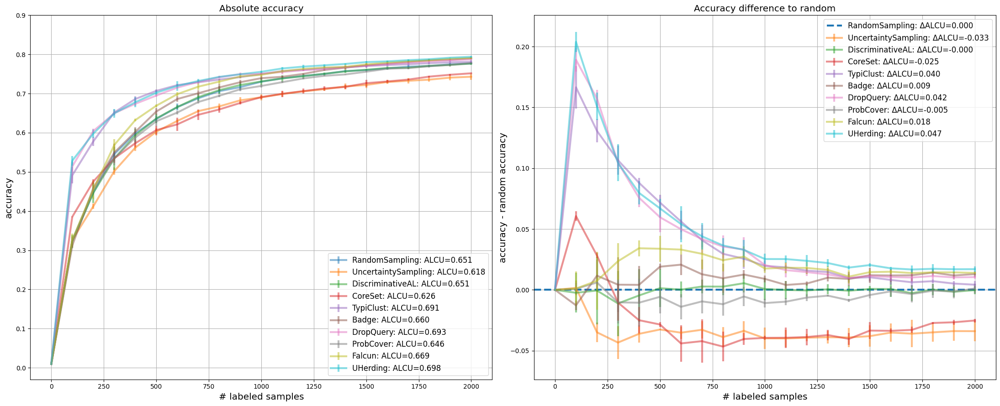

Deep Active Learning with Frozen Vision Transformer#
Google Colab Note: If the notebook fails to run after installing the needed packages, try to restart the runtime (Ctrl + M) under Runtime -> Restart session.

Notebook Dependencies
Uncomment the following cells to install all dependencies for this tutorial.
[1]:
!pip install scikit-activeml[opt] torch torchvision tqdm datasets transformers
This tutorial demonstrates a practical comparison study using scikit-activeml. The workflow uses the self-supervised DINOv2 model [1] to compute frozen image embeddings for the CIFAR-100 dataset [2]. Based on these embeddings, several active learning strategies are compared in a pool-based classification setting.
Key Steps:
Self-Supervised Feature Extraction: Use frozen DINOv2 to create embedding representations for the CIFAR-100 train and test images.
Active Learning Strategies: Compare different active learning strategies provided by our library, including:
Random Sampling,
Uncertainty Sampling,
Discriminative Active Learning,
CoreSet,
TypiClust,
Badge,
ProbCover,
DropQuery,
Falcun,
UHerding.
Batch Sample Selection: Use each active learning strategy, wrapped by a subsampling step for efficiency, to select batches of samples for labeling.
Plotting the Results: Compare both the absolute test-accuracy curves and the differences relative to random sampling.
References:
[1] Oquab, M., Darcet, T., Moutakanni, T., Vo, H. V., Szafraniec, M., Khalidov, V., … & Bojanowski, P. DINOv2: Learning Robust Visual Features without Supervision. Transactions on Machine Learning Research.
[2] Krizhevsky, A., & Hinton, G. (2009). Learning Multiple Layers of Features from Tiny Images.
[ ]:
# Comment in for speedup, if you have cuML installed.
# %load_ext cuml.accel
import numpy as np
import matplotlib as mpl
import matplotlib.pyplot as plt
import torch
import warnings
from datasets import load_dataset
from sklearn.linear_model import LogisticRegression
from skactiveml.classifier import SklearnClassifier
from skactiveml.pool import (
UncertaintySampling,
RandomSampling,
DiscriminativeAL,
CoreSet,
TypiClust,
Badge,
DropQuery,
ProbCover,
Falcun,
UHerding,
SubSamplingWrapper,
)
from skactiveml.utils import call_func
from transformers import AutoImageProcessor, Dinov2Model
from tqdm import tqdm
warnings.filterwarnings("ignore")
mpl.rcParams["figure.facecolor"] = "white"
device = "cuda" if torch.cuda.is_available() else "cpu"
cuML: Accelerator installed.
Embed CIFAR-100 Images with DINOv2#
In this step, we prepare the train and test sets using the self-supervised DINOv2 model. DINOv2, short for “self-distillation with no labels,” is a vision foundation model that provides meaningful frozen representations for image data. Here, we use the CLS-token representation of facebook/dinov2-small as the embedding for each CIFAR-100 image.
[3]:
# Download data.
ds = load_dataset("uoft-cs/cifar100")
# Download DINOv2 ViT/S-14 as embedding model.
processor = AutoImageProcessor.from_pretrained(
"facebook/dinov2-small", use_fast=True
)
model = Dinov2Model.from_pretrained("facebook/dinov2-small").to(device).eval()
# Embed CIFAR-100 images.
def embed(batch):
inputs = processor(images=batch["img"], return_tensors="pt").to(device)
with torch.no_grad():
out = model(**inputs).last_hidden_state[:, 0]
batch["emb"] = out.cpu().numpy()
return batch
ds = ds.map(embed, batched=True, batch_size=32)
X_pool = np.stack(ds["train"]["emb"], dtype=np.float32)
y_pool = np.array(ds["train"]["fine_label"], dtype=np.int64)
X_test = np.stack(ds["test"]["emb"], dtype=np.float32)
y_test = np.array(ds["test"]["fine_label"], dtype=np.int64)
Random Seed Management#
To ensure experiment reproducibility, we define helper functions for generating seeds and RandomState objects. The classifier seed is derived from master_random_state, while the experiment loop also creates deterministic per-repetition random states for the query strategy and subsampling wrapper.
[4]:
master_random_state = np.random.RandomState(0)
def gen_seed(random_state: np.random.RandomState):
"""
Generate a seed for a random number generator.
Parameters:
- random_state (np.random.RandomState): Random state object.
Returns:
- int: Generated seed.
"""
return random_state.randint(0, 2**31)
def gen_random_state(random_state: np.random.RandomState):
"""
Generate a new random state object based on a given random state.
Parameters:
- random_state (np.random.RandomState): Random state object.
Returns:
- np.random.RandomState: New random state object.
"""
return np.random.RandomState(gen_seed(random_state))
Classification Models and Query Strategies#
The embeddings computed above serve as input to a classification model. In this tutorial, we use LogisticRegression from sklearn, wrapped by SklearnClassifier, for both evaluation and strategy interfaces that require a classifier-like object. UHerding can use decision_function as a logits fallback for such linear classifiers, so it can be included here without switching to a neural network classifier. Query strategies are instantiated through factory functions to keep the
repetition logic compact and reproducible.
[ ]:
n_features, classes = X_pool.shape[1], np.unique(y_pool)
missing_label = -1
clf = SklearnClassifier(
LogisticRegression(verbose=0, tol=1e-3, C=0.01, max_iter=10000),
classes=classes,
random_state=gen_seed(master_random_state),
missing_label=-1,
)
def create_query_strategy(name, random_state):
return query_strategy_factory_functions[name](random_state)
query_strategy_factory_functions = {
"RandomSampling": lambda random_state: RandomSampling(
random_state=gen_seed(random_state), missing_label=missing_label
),
"UncertaintySampling": lambda random_state: UncertaintySampling(
random_state=gen_seed(random_state),
missing_label=missing_label
),
"DiscriminativeAL": lambda random_state: DiscriminativeAL(
random_state=gen_seed(random_state), missing_label=missing_label
),
"CoreSet": lambda random_state: CoreSet(
random_state=gen_seed(random_state), missing_label=missing_label
),
"TypiClust": lambda random_state: TypiClust(
random_state=gen_seed(random_state), missing_label=missing_label
),
"Badge": lambda random_state: Badge(
random_state=gen_seed(random_state), missing_label=missing_label
),
"DropQuery": lambda random_state: DropQuery(
random_state=gen_seed(random_state), missing_label=missing_label,
),
"ProbCover": lambda random_state: ProbCover(
random_state=gen_seed(random_state), missing_label=missing_label
),
"Falcun": lambda random_state: Falcun(
random_state=gen_seed(random_state), missing_label=missing_label
),
"UHerding": lambda random_state: UHerding(
random_state=gen_seed(random_state),
missing_label=missing_label,
),
}
Experiment Parameters#
For this experiment, we need to define how the strategies should be compared against one another. Here the number of repetitions (n_reps), the number of cycles (n_cycles), and the size of each query (query_batch_size) need to be defined.
[6]:
n_reps = 3
n_cycles = 20
query_batch_size = 100
query_strategy_names = query_strategy_factory_functions.keys()
The experiment loop iterates over all query strategies. For each repetition, the strategy is wrapped in SubSamplingWrapper to restrict the candidate pool for efficiency, the classifier is refit after every acquisition step, and the test accuracy is stored for each cycle in the results dictionary.
[7]:
results = {}
for qs_name in query_strategy_names:
accuracies = np.full((n_reps, n_cycles + 1), np.nan)
for i_rep in range(n_reps):
y_train = np.full(shape=len(X_pool), fill_value=missing_label)
qs = create_query_strategy(
qs_name,
random_state=gen_random_state(np.random.RandomState(i_rep)),
)
qs = SubSamplingWrapper(
query_strategy=qs,
missing_label=missing_label,
random_state=gen_random_state(np.random.RandomState(i_rep)),
exclude_non_subsample=True,
max_candidates=0.2,
)
clf.fit(X_pool, y_train)
accuracies[i_rep, 0] = clf.score(X_test, y_test)
for c in tqdm(
range(1, n_cycles + 1), desc=f"Repeat {i_rep + 1} with {qs_name}"
):
query_idx = call_func(
qs.query,
X=X_pool,
y=y_train,
batch_size=query_batch_size,
clf=clf,
discriminator=clf,
update=True,
fit_clf=False,
)
y_train[query_idx] = y_pool[query_idx]
clf.fit(X_pool, y_train)
accuracies[i_rep, c] = clf.score(X_test, y_test)
results[qs_name] = accuracies
Repeat 1 with RandomSampling: 0%| | 0/20 [00:00<?, ?it/s]Repeat 1 with RandomSampling: 100%|██████████| 20/20 [00:00<00:00, 21.09it/s]
Repeat 2 with RandomSampling: 100%|██████████| 20/20 [00:00<00:00, 22.04it/s]
Repeat 3 with RandomSampling: 100%|██████████| 20/20 [00:00<00:00, 23.45it/s]
Repeat 1 with UncertaintySampling: 100%|██████████| 20/20 [00:01<00:00, 17.12it/s]
Repeat 2 with UncertaintySampling: 100%|██████████| 20/20 [00:01<00:00, 18.28it/s]
Repeat 3 with UncertaintySampling: 100%|██████████| 20/20 [00:01<00:00, 17.61it/s]
Repeat 1 with DiscriminativeAL: 100%|██████████| 20/20 [01:26<00:00, 4.32s/it]
Repeat 2 with DiscriminativeAL: 100%|██████████| 20/20 [01:22<00:00, 4.12s/it]
Repeat 3 with DiscriminativeAL: 100%|██████████| 20/20 [01:22<00:00, 4.12s/it]
Repeat 1 with CoreSet: 100%|██████████| 20/20 [00:06<00:00, 2.99it/s]
Repeat 2 with CoreSet: 100%|██████████| 20/20 [00:06<00:00, 3.00it/s]
Repeat 3 with CoreSet: 100%|██████████| 20/20 [00:06<00:00, 3.02it/s]
Repeat 1 with TypiClust: 100%|██████████| 20/20 [00:12<00:00, 1.58it/s]
Repeat 2 with TypiClust: 100%|██████████| 20/20 [00:12<00:00, 1.59it/s]
Repeat 3 with TypiClust: 100%|██████████| 20/20 [00:12<00:00, 1.59it/s]
Repeat 1 with Badge: 100%|██████████| 20/20 [08:02<00:00, 24.12s/it]
Repeat 2 with Badge: 100%|██████████| 20/20 [08:01<00:00, 24.09s/it]
Repeat 3 with Badge: 100%|██████████| 20/20 [08:03<00:00, 24.15s/it]
Repeat 1 with DropQuery: 100%|██████████| 20/20 [00:07<00:00, 2.55it/s]
Repeat 2 with DropQuery: 100%|██████████| 20/20 [00:07<00:00, 2.61it/s]
Repeat 3 with DropQuery: 100%|██████████| 20/20 [00:07<00:00, 2.61it/s]
Repeat 1 with ProbCover: 100%|██████████| 20/20 [01:29<00:00, 4.46s/it]
Repeat 2 with ProbCover: 100%|██████████| 20/20 [01:28<00:00, 4.42s/it]
Repeat 3 with ProbCover: 100%|██████████| 20/20 [01:28<00:00, 4.43s/it]
Repeat 1 with Falcun: 100%|██████████| 20/20 [00:02<00:00, 8.06it/s]
Repeat 2 with Falcun: 100%|██████████| 20/20 [00:02<00:00, 7.93it/s]
Repeat 3 with Falcun: 100%|██████████| 20/20 [00:02<00:00, 7.88it/s]
Repeat 1 with UHerding: 100%|██████████| 20/20 [05:26<00:00, 16.30s/it]
Repeat 2 with UHerding: 100%|██████████| 20/20 [05:27<00:00, 16.37s/it]
Repeat 3 with UHerding: 100%|██████████| 20/20 [05:27<00:00, 16.36s/it]
Resulting Plotting#
We use learning curves to compare strategies. The left subplot shows the average accuracy over all repetitions. The right subplot shows the corresponding accuracy differences relative to RandomSampling, making the random baseline the zero line. In addition, the legends provide the area under the corresponding curves, either in absolute terms or relative to random.
[8]:
x = np.arange(n_cycles + 1) * query_batch_size
random_results = results["RandomSampling"].reshape((-1, n_cycles + 1))
colors = plt.rcParams["axes.prop_cycle"].by_key()["color"]
strategy_colors = {
qs_name: colors[i % len(colors)]
for i, qs_name in enumerate(query_strategy_names)
}
fig, (ax_abs, ax_diff) = plt.subplots(1, 2, figsize=(22, 9), sharex=True)
for qs_name in query_strategy_names:
result = results[qs_name].reshape((-1, n_cycles + 1))
mean = np.mean(result, axis=0)
std = np.std(result, axis=0)
color = strategy_colors[qs_name]
ax_abs.errorbar(
x,
mean,
std,
label=f"{qs_name}: ALCU={np.mean(mean):.3f}",
alpha=0.5,
color=color,
linewidth=3,
elinewidth=3,
)
if qs_name == "RandomSampling":
ax_diff.axhline(
0.0,
color=color,
linestyle="--",
linewidth=3,
label=f"{qs_name}: ΔALCU=0.000",
)
continue
delta_result = result - random_results
delta_mean = np.mean(delta_result, axis=0)
delta_std = np.std(delta_result, axis=0)
ax_diff.errorbar(
x,
delta_mean,
delta_std,
label=f"{qs_name}: ΔALCU={np.mean(delta_mean):.3f}",
alpha=0.5,
color=color,
linewidth=3,
elinewidth=3,
)
ax_abs.set_title("Absolute accuracy", fontsize="x-large")
ax_diff.set_title("Accuracy difference to random", fontsize="x-large")
ax_abs.set_yticks(np.arange(0, 1.0, 0.1))
ax_abs.grid()
ax_diff.grid()
ax_abs.legend(loc="lower right", fontsize="large")
ax_diff.legend(loc="upper right", fontsize="large")
ax_abs.set_xlabel("# labeled samples", fontsize="x-large")
ax_diff.set_xlabel("# labeled samples", fontsize="x-large")
ax_abs.set_ylabel("accuracy", fontsize="x-large")
ax_diff.set_ylabel("accuracy - random accuracy", fontsize="x-large")
fig.tight_layout()
plt.show()
